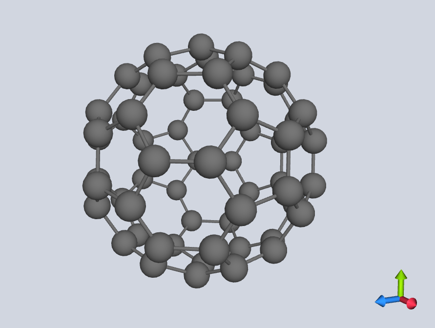

User Guide
This page walks through the Python API in depth. For the command-line tool, see Getting Started.
Want one runnable script instead?
The repository ships example_usage.py (also viewable
on GitHub),
a single end-to-end tour that exercises every public feature in order —
structure loading, point-group determination, character tables, the
HTML/LaTeX exporters, the structure generator, and the 3-D viewer. It reads
from the bundled sample molecules, so it runs as-is straight after
pip install pyrrhotite:
python example_usage.py
The walkthrough below explains each piece it uses.
How the pieces fit together
Before diving into each piece individually, here's how the main objects relate to one another:
flowchart LR
XYZ[".xyz file"] --> S["Structure"]
S --> SYM["Symmetry"]
SYM --> PG["PointGroup"]
SYM --> OM["OperationManager"]
PG --> CT["Character table"]
CT --> EXP["HTML / LaTeX export"]
PG --> BF["Basis functions"]
S --> VIS["3-D visualizer"]Structureloads and re-centres the atoms from an.xyzfile — or is built synthetically bygenerate_idealized_structure.Symmetryruns the detection pipeline described in Algorithm & Supported Groups and exposes the result as aPointGroup, plus anOperationManagerholding every individual symmetry operation that was found.- A
PointGroupknows its character table and basis functions, and can be exported to HTML/LaTeX — or obtained directly by name, with noStructureat all (see Character tables for any group). - A
Structurecan also be handed straight to the 3-D visualizer, independently ofSymmetry.
Point group determination
This is the core workflow: take a geometry and find its point group.
from pyrrhotite import Structure, Symmetry
s = Structure("ammonia.xyz") # path to an .xyz file (str or pathlib.Path)
sym = Symmetry(s) # runs detection on the loaded Structure
pg = sym.point_group
print(pg.label.name) # "C3v"
print(pg.order) # 6 (total number of symmetry operations)
pyrrhotite ammonia.xyz # prints the detected point group
Inputs. Structure(...) takes the path to a standard .xyz file — see
Input format for the expected layout. The
molecule does not need to be pre-centred: Structure loads the atoms and
coordinates and automatically re-centres them on the centre of mass, which is
where symmetry detection expects the origin to be. Symmetry(...) then takes
that Structure and runs the full detection pipeline, exposing the result as a
PointGroup.
Why it's useful. The PointGroup you get back is the gateway to everything
else on this page — its character table, irreps, and basis functions — so a
single Symmetry(Structure(...)) call is usually the first thing you write.
Want to see why a group was assigned?
sym.operation_manager gives you every individual symmetry operation that
was detected, along with its axis and a numerical error estimate — see
Symmetry operations below.
Character tables
A character table is a small grid that summarises everything the point group tells you about the molecule: which combinations of atomic orbitals are allowed to mix, and which vibrations/rotations show up in infrared or Raman spectra.
Once you have a PointGroup (pg = sym.point_group from the section above), you
can print its table or read the underlying data directly.
# Print with rich formatting (falls back to plain if rich is not installed)
pg.print_character_table()
# Plain text — no colour/box-drawing, good for logs and piping
pg.print_character_table(plain=True)
# ε-notation for cyclic / Sn groups
pg.print_character_table(complex=True)
# Access the data directly
print(pg.irreps) # list of IrrepLabel objects
print(pg.characters) # list[list[float]] — [irrep][operation class]
print(pg.unique_operations) # conjugacy classes (excluding E)
pyrrhotite -ct ammonia.xyz # character table
pyrrhotite -ct --plain ammonia.xyz # force plain-text output
pyrrhotite -ct --complex ammonia.xyz # ε-notation
Inputs. print_character_table() takes two optional booleans: plain=True
suppresses the rich formatting (use it when output is going to a file, a log,
or another program), and complex=True switches to ε-notation (see the note
below). The pg.irreps, pg.characters, and pg.unique_operations attributes
expose the same data as plain Python objects when you need the values
programmatically rather than printed.
ε-notation
Cyclic groups (Cₙ, Sₙ, …) with n > 2 have complex-valued irreducible
representations. print_character_table(complex=True) displays these
using ε = e^(2πi/n) notation instead of expanding them numerically — the
conventional form used in most textbooks and reference tables.
Character tables for any group — no XYZ needed
You can also generate a character table for a named point group without loading any molecule. This works for all 18 Schoenflies classes — the seven axial families (Cn, Cnh, Cnv, Sn, Dn, Dnh, Dnd) are generated analytically for any order, and the rest (cubic, icosahedral, linear, and the low-symmetry groups) come from a built-in table.
from pyrrhotite.character_tables import (
get_or_generate_point_group,
print_character_table_for,
)
print_character_table_for("D4h")
pg = get_or_generate_point_group("C12v")
pg.print_character_table()
These two functions sit at different levels:
print_character_table_for(name)is a fire-and-forget convenience — it looks the group up (or generates it) and prints the table straight to stdout, returning nothing. Use it when you just want to see the table.get_or_generate_point_group(name)returns thePointGroupobject, so you can inspectpg.irreps/pg.characters, hand it to the HTML/LaTeX exporters, or callpg.print_character_table(complex=True). Use it when you want the data, not just a printout. (Axial groups outside the hardcoded list are generated on the fly; the rest come from the built-in table — hence "get or generate".)
So print_character_table_for("D4h") is just shorthand for
get_or_generate_point_group("D4h").print_character_table().
pyrrhotite -g C3v
pyrrhotite -g D6h --plain
pyrrhotite -g C12v # arbitrary order — generated on the fly
Exporting character tables (HTML / LaTeX)
For reports, slides, or web pages, character tables can be exported directly to HTML or LaTeX:
from pyrrhotite.character_tables import format_html, save_html, format_latex, save_latex
print(format_html(["C3v", "D6h"])) # HTML string, ready to embed in a page
save_html(["Oh"], "oh_table.html") # write a standalone HTML file
print(format_latex(["C3v", "D6h"])) # LaTeX string (requires \usepackage{booktabs,amsmath})
save_latex(["Oh"], "oh_table.tex")
python -m pyrrhotite.character_tables.html_formatter C3v D6h
python -m pyrrhotite.character_tables.html_formatter Oh --save
python -m pyrrhotite.character_tables.latex_formatter Oh D4h --save tables.tex
Inputs. Every exporter takes a list of group names (e.g.
["C3v", "D6h"]) rather than a single string, so you can render several tables
in one call. The format_* functions return the markup as a string (handy for
embedding into a larger document); the save_* functions write it to the file
path you give and return nothing. The module-script form (python -m ...) is the
command-line equivalent: pass group names as arguments and --save to write to
disk. These work for any of the 18 classes, with no .xyz file or Structure
needed.
The HTML is fully self-contained (it carries its own <style> block), so it
drops straight into any page. Here is the actual, unedited output of
format_html(["C3v"]), rendered live:
| C3v | E | 2 C3 | 3 σv |
|---|---|---|---|
| A1 | 1 | 1 | 1 |
| A2 | 1 | 1 | -1 |
| E | 2 | -1 | 0 |
Self-contained, light-styled tables
The exported table ships with its own colours (a light grey header and zebra striping), so it looks identical wherever you embed it — which also means it keeps that light styling even on this page in dark mode. That is by design: the export is meant to be portable into reports and slides, not to inherit a host site's theme.
Generating idealized structures
For testing or demonstration, pyrrhotite can build an idealized Structure
that has, by construction, a requested axial point-group symmetry — a ring (or
combination of rings) of placeholder atoms arranged as a Cn, Cnh, Cnv, Sn, Dn,
Dnh, or Dnd structure for any supported order n.
Plausible geometry, not just placeholder points
The geometry of each family is modelled on a real molecule with that symmetry (e.g. ammonia-like apex+ring substituents for Cnv, benzene's ring+substituent for Cnh, ferrocene's metal-hub sandwich for Dn/Dnh/Dnd/Sn). Element choices roughly match each atom's bonding degree (H for degree 1, O for degree 2, N for degree 3, C for degree 4, S for degree 5-6, and a metal-like hub for higher degrees), so the generated structure also looks reasonable in the 3-D viewer.
A geometric illustration, not a chemistry tool
The generator's only guarantee is that the resulting arrangement of points has the requested point-group symmetry. The choice of elements and the bonds drawn between them are picked purely so the structure looks like a plausible molecule — they do not correspond to real, synthesisable compounds, realistic bond lengths, or valid valences. Most generated structures are not real molecules and should not be read as chemical claims.
Supported families: Cn, Cnh, Cnv, Sn (even orders), Dn,
Dnh, Dnd. Cubic, icosahedral, linear, and low-symmetry groups are not
generated.
High-order limits. Each family is built from one or two rings of n
atoms, so the rings get geometrically crowded as n grows — at large n
the fixed-radius spheres can visually touch and the bonds get hard to read.
For the hub families (Dn/Dnh/Dnd/Sn) the hub element is chosen
adaptively — the smallest atom (Cl → Fe → Cs) that still bonds to the ring
at its natural radius — so small n gets a compact hub rather than a giant
caesium sphere, escalating to caesium only for large n; the ring radius is
then capped so that hub stays bonded. These are tuned for the supported range
up to n = 20. Beyond that the visual quality degrades and detection
tolerances tighten (see Algorithm & Supported Groups); treat
very high orders as schematic.
from pyrrhotite import generate_idealized_structure, write_xyz, Symmetry
from pyrrhotite.structure_generator import format_xyz
s = generate_idealized_structure("D12h") # build an idealized D12h structure
print(Symmetry(s).point_group.label.name) # "D12h"
print(format_xyz(s)) # get it as XYZ text, no file needed
write_xyz(s, "d12h.xyz") # or write it straight to an .xyz file
pyrrhotite -g D12h --xyz # print the generated structure as XYZ to stdout
pyrrhotite -g D12h --xyz d12h.xyz # save the generated structure as XYZ to a file
pyrrhotite d12h.xyz -v # then analyse the generated file as usual
Inputs. generate_idealized_structure(...) takes a group name string
from one of the supported axial families (see the box above) — the order n is
read straight from the name, so "D12h" builds a 12-fold structure. It returns a
normal Structure, so you can feed it straight back into Symmetry(...),
format_xyz(...) (returns the XYZ text as a string), write_xyz(...) (writes it
to a path), or the visualizer. Asking for an unsupported group or order raises a
ValueError rather than silently producing a wrong structure.
To preview a generated structure without writing it to disk first, use
visualize_idealized_structure (requires pip install 'pyrrhotite[vis]'):
from pyrrhotite import visualize_idealized_structure
visualize_idealized_structure("D9d") # opens the 3-D viewer
visualize_idealized_structure("D9d", show_labels=True) # overlay element labels
pyrrhotite -g D9d --visualize # preview the generated structure directly
pyrrhotite -g D9d -vis -l # ... with element labels shown
Round-trip testing
Generating a structure for a group and then immediately running
Symmetry(...) on it (as in the snippet above) is a good way to sanity-check
that detection recovers the group you asked for — example_usage.py (section
14) has a runnable demo covering all seven axial families, custom
radius/height/element, and the error cases for unsupported groups/orders.
Rotor classification and principal axes
Before searching for symmetry operations, pyrrhotite classifies the molecule's
overall shape from its moments of inertia — this narrows down which symmetry
elements are even possible. These are read straight off the Symmetry object you
already built; no extra arguments are involved.
print(sym.rotor_class) # RotorClass.ProlateSymmetricTop
pm = sym.principal_moments # np.ndarray shape (3,) — Ia ≤ Ib ≤ Ic in u·Å²
axes = sym.principal_axes # np.ndarray shape (3, 3) — eigenvectors as columns
cart = sym.cartesian_axes # 3×3 matrix [x | y | z] in the conventional frame
pyrrhotite -m ammonia.xyz # principal moments + Cartesian axes
pyrrhotite -v ammonia.xyz # rotor class (with the operation list)
Why it's useful. The rotor class (spherical / symmetric / asymmetric top, linear, …) tells you at a glance what kind of molecule you have, and it's the first thing the detection pipeline computes — so inspecting it is a quick way to understand why a given set of axes was searched for.
Symmetry operations
Every symmetry operation found on the molecule (rotation axes, mirror planes, inversion centre, improper rotation axes) is available individually, with its axis and a numerical error estimate showing how well the molecule actually matches that symmetry.
manager = sym.operation_manager
for op in manager.operations:
print(op.label.short_name) # "C3", "C3^2", "σv", "i", …
print(op.axis) # unit-vector axis / plane normal
print(op.error) # worst-case atom mis-mapping distance (Å)
manager.proper_rotations # filtered views onto the same operations
manager.improper_rotations
manager.reflections
manager.inversions
pyrrhotite -v ammonia.xyz # list every detected operation
pyrrhotite -od ammonia.xyz # ... plus the atoms lying on each element
Why it's useful. Where point_group gives you the single summary label, the
OperationManager lets you drill into the individual elements behind it — useful
for verifying a borderline assignment, or for picking out (say) just the mirror
planes via the manager.reflections filtered view. The op.error field
(explained in the note below) is your handle on how cleanly each operation
holds.
Reading op.error
op.error is the worst-case distance (in Å) by which any atom misses its
expected mapped position under that operation. A small, uniform error
across all operations of a detected group is normal numerical noise; a
much larger error on one operation than the others can indicate a slightly
distorted geometry that's still close enough to pass the 10% tolerance.
Basis functions
Basis functions tell you, for each irreducible representation (irrep), which
x, y, z coordinates, rotations, or quadratic combinations (x², xy, …)
transform the same way — useful for working out IR/Raman selection rules and
orbital symmetries.
from pyrrhotite.point_groups.basis_functions import compute_basis_functions
basis = compute_basis_functions(pg) # pg = any PointGroup
# Returns dict[irrep_name, {"linear": [...], "quadratic": [...]}]
for irrep, funcs in basis.items():
print(irrep, funcs["linear"], funcs["quadratic"])
pyrrhotite -ct ammonia.xyz # the basis functions appear in the table's
# "Lin/Rot" and "Quadratic" columns
Inputs. compute_basis_functions(...) takes a PointGroup — whether it came
from a Symmetry analysis or from get_or_generate_point_group(name) — and
returns a dictionary keyed by irrep name. On the command line the same
information is rendered as the right-hand columns of the -ct character table,
so reach for the Python form only when you need the assignments as data.
Pretty-printing helpers
Everything above is exposed as plain Python attributes so you can format it
however you like. For quick, readable output while exploring in a shell or
notebook, pyrrhotite.display bundles a few ready-made printers that take the
objects you already have (a Structure, an operation list, a PointGroup) and
print a tidy table. These are a Python convenience — the command-line tool
covers the same ground through its -v, -ct, and -od flags, so there's no
separate CLI for them:
from pyrrhotite.display import (
print_bond_pairs, # bonded atom pairs, e.g. "N0 — H1"
print_ops_with_atoms, # each operation + the atoms on its axis/plane
print_basis_functions, # irrep → linear/rotational & quadratic basis
print_char_table_programmatic, # character table built from the raw pg arrays
)
print_bond_pairs(s) # s = a Structure
print_ops_with_atoms(sym.operation_manager.operations, s)
print_basis_functions(pg) # pg = a PointGroup
print_char_table_programmatic(pg)
Convenience wrappers, not a separate data source
These don't compute anything new — they're thin formatters over data that's
already on the objects (s.calculate_bond_pairs(), pg.characters,
pg.irreps, …). Use them for a quick look; reach for the underlying
attributes when you need the values programmatically. They live under
pyrrhotite.display rather than the top-level package namespace. See the
API reference for the individual signatures, and
example_usage.py (sections 1, 4, 6, 7) for each one in context.
Element data
A small lookup table of element properties (symbol, atomic number, mass) used internally for centre-of-mass centring and element colouring, exposed in case it's handy in your own scripts. This is a Python-only helper — there is no command-line equivalent.
from pyrrhotite.periodic_table import get_element, get_atomic_number
el = get_element(6) # accepts an atomic number ...
print(el.symbol) # "C"
print(el.mass) # 12.011
n = get_atomic_number("Fe") # ... or look a number up from a symbol -> 26
3-D visualizer
pyrrhotite includes a small interactive viewer for checking what the molecule
actually looks like before or after analysis. It draws atoms as colour-coded
spheres, bonds as cylinders, and a small red/green/blue arrow gizmo in the corner
showing the x/y/z axes.

from pyrrhotite import Structure, visualize
s = Structure("ammonia.xyz")
visualize(s) # opens a window
visualize(s, show_labels=True) # also overlay element symbols (N, H, H, H, ...)
pyrrhotite ammonia.xyz --visualize # analyse, then open the viewer
pyrrhotite ammonia.xyz -vis -l # ... with element labels shown
Inputs. visualize(...) takes a Structure (loaded from a file or generated)
and an optional show_labels flag. Controls: left-click and drag to rotate
the molecule, scroll to zoom.
This requires the optional vis dependencies (PyQt6, PyOpenGL, pyrr):
pip install 'pyrrhotite[vis]'
If they aren't installed, visualize() raises an ImportError with
instructions instead of crashing.
Note
Unlike Luuk Kempen's original visualizer, this viewer does not (yet) draw the detected symmetry elements (axes, mirror planes) on top of the molecule — it shows only the molecule itself, the axis gizmo, and optional atom labels.
Sample molecules
For learning and quick experiments, pyrrhotite bundles 32 .xyz files
covering all major point-group families (water, ammonia, benzene, ferrocene,
buckminsterfullerene, ...). These are exposed through a few convenience
functions:
from pyrrhotite import (
list_sample_molecules,
load_sample,
analyse_sample,
visualize_sample,
show_character_table_sample,
)
list_sample_molecules() # ['E-hex-3-ene', 'adamantane', 'ammonia', ...]
s = load_sample("benzene") # returns a Structure
analyse_sample("benzene") # prints point group + rotor class
show_character_table_sample("benzene") # prints the character table
visualize_sample("buckminsterfullerene") # opens the 3-D viewer (requires [vis])
analyse_sample() # no name -> picks a random sample molecule
# The samples ship as plain .xyz files, so the normal CLI works on them too:
pyrrhotite src/sample_molecules/benzene.xyz -v -ct
pyrrhotite src/sample_molecules/*.xyz # analyse all of them at once
Inputs. Each helper takes a sample name (one of the strings returned by
list_sample_molecules()) — not a file path. load_sample returns a
Structure you can use like any other; analyse_sample,
show_character_table_sample, and visualize_sample are one-call shortcuts that
load and act on the sample. Calling analyse_sample() with no name picks one
at random. The Python helpers exist purely so you don't have to know where the
bundled files live; on the command line you point pyrrhotite at the .xyz
files directly.
Good starting points for each rotor class
analyse_sample() with no argument picks a random molecule — handy for
quickly seeing a variety of point groups and rotor classes without
sourcing your own .xyz files. Combine it with visualize_sample(...) to
see the geometry that produced a given result.
Next steps
-
Examples Gallery
See the API above applied across point-group families, with output and rendered character tables.
-
Example Script
example_usage.py— every feature on this page, wired together into one runnable tour. -
API Reference
The exact signatures, parameters, and return types for every public function and class.
-
Algorithm & Supported Groups
How detection works under the hood, and the full list of supported groups.